|
Cuaderno técnico 8: (Tutorial) Instalación de ISE 7.1 y EDK 7.1 en una máquina GNU/Linux con Debian/Sarge |
La herramienta ISE de Xilinx, un entorno integrado para sintentizar diseños y generar los bitstream para su descarga en FPGAs, fue portada a Linux. Sin embargo, oficialmente sólo ofrecen soporte para distribuciones Red Hat Enterprise. En los ordenadores de la Escuela Politécnica Superior de la Universidad Autónoma de Madrid (UAM) lo que tenemos instalado es una distribución Debian/Sarge.
En este tutorial se describe cómo es posible instalar el ISE y el EDK 7.1 en una Debian/Sarge. Todavía la versión de Linux es bastante peor que la de Windows: funciona más lento y a veces se cuelga. Sin embargo los que usamos GNU/Linux ya podemos sintentizar en nuestros ordenadores.
Los drivers de los cables para descargar los bitstreams en las FPGAs no he conseguido que funcionen, eso lo dejaré para otro tutorial :-)
La máquina en la que se ha hecho la instalación es la siguiente:
Ordenador: Dell Optiplex GX280, con partición Linux de 20Gb y 512MB de Memoria RAM
Sistema operativo: GNU/Linux
Distribución de GNU/Linux: Debian 3.1 (Sarge)
Kernel: 2.6.8-2.686-smp
Entorno gráfico: Gnome 2.8
El disco duro está asociado al dispositivo /dev/sda y el cdrom al /dev/hda
Instalar el paquete libmotif3, que está en non-free. (apt-get install libmotif3). La versión que yo tengo es la 2.2.3-1
Si no estuviese instalado este paquete, aparecería un error como el siguiente:
|
/cdrom/platform/lin/xilsetup: error while loading shared libraries: libXm.so.3: cannot open shared object file: No such file or directory |
Instalar el paquete libcurl3 (apt-get install libcurl3). La versión que yo tengo es la 7.13.2-2.
Ejecutar los siguientes comandos, como root:
|
juan@montu:~# ln -s /usr/lib/libcurl.so.3 /usr/lib/libcurl.so.2 juan@montu:~# ldconfig |
Si no están establecidos o no está instalado el paquete libcurl3 aparecerá un error como el siguiente:
|
/cdrom/platform/lin/xilsetup: error while loading shared libraries: libcurl.so.2: cannot open shared object file: No such file or directory |
Una vez cumplidos los requisitos previos abrimos un terminal de gnome y nos metemos como root:
|
juan@montu:~$ su Password: montu:/home/juan# |
Introducir el CD 1: “ISE 7.1i – Linux 32-bit. Disc 1 of 3. Design Environment and Documentation”. Es posible que el CD se automonte (en el gnome que tengo instalado se automonta nada más introducirlo). Si es así hay que desmontarlo y montarlo manualmente con permisos de ejecución, o de lo contrario no nos dejará ejecutar el script de arranque setup.
Ejecutar el comando mount para ver el estado actual de cómo está montado el CDROM.
|
montu:/home/juan# mount [...] /dev/hda on /media/cdrom0 type iso9660 (ro,noexec,nosuid,nodev,user=juan) |
En este caso el CD se ha automontado y el usuario no tiene permisos de ejecución. En este caso hay que desmontar el CD y montarlo como root:
|
montu:/home/juan# umount /media/cdrom0 montu:/home/juan# mount /dev/hda -t iso9660 /cdrom mount: dispositivo de bloques /dev/hda está protegido contra escritura; se monta como sólo lectura |
En mi ordenador el CD es el dispositivo /dev/hda y lo estoy montando sobre el directorio /cdrom. (un enlace simbólico a /dev/cdrom0) Si ahora ejecutamos el comando mount aparecerá lo siguiente:
|
montu:/home/juan# mount [...] /dev/hda on /media/cdrom0 type iso9660 (ro) |
Ahora ya sí tenemos permisos de ejecución.
Exportar el display:
|
montu:/home/juan# export DISPLAY=:0 |
Entrar en el CD y ejecutar el script setup:
|
montu:/home/juan# cd /cdrom montu:/cdrom# ./setup /cdrom/platform/lin/bin/lin Wind/U Error (294): Unable to install Wind/U ini file (/cdrom/platform/lin/data/WindU). See the Wind/U manual for more details on the “.WindU” file and the “WINDU” environment variable |
Aunque aparece un mensaje de error, al cabo de unos segundos aparecerá la ventana de bienvenida del ISE 7.1:
|
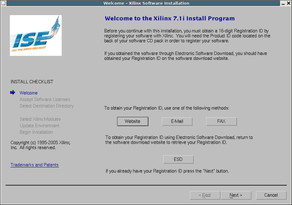 |
Si no estuviese exportado el display, aparecería el siguente mensaje de error:
|
montu:/cdrom# ./setup /cdrom/platform/lin/bin/lin Wind/U X-toolkit Error: wuDisplay: Can't open display |
Pinchar en Next. Apareceren tres pantallas con las licencias, que hay que aceptar y pinchar en Next. Aquí pongo un pantallazo de la primera de ellas:
|
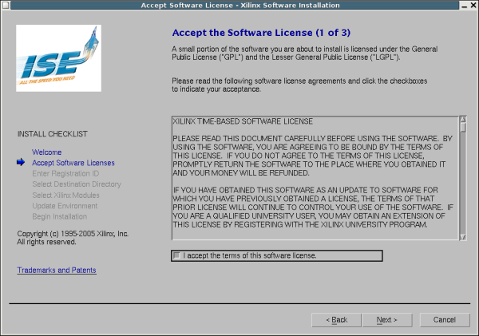 |
Introducir el número de registro, facilitado al adquirir el ISE y continuar (Next)
|
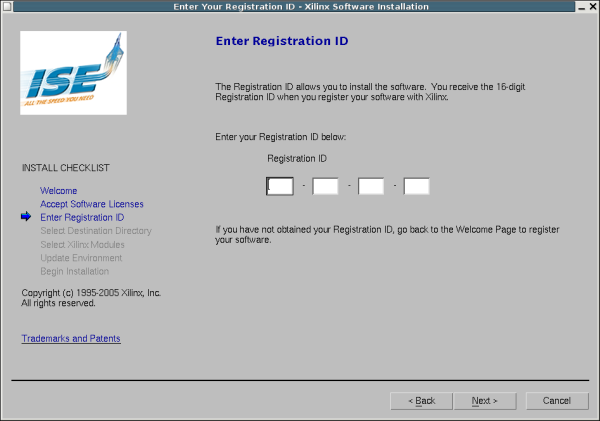 |
Seleccionar el directorio donde instalar el ISE. Yo lo pondré en /usr/local/Xilinx
|
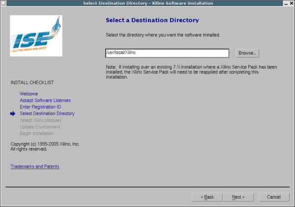 |
Seleccionar qué módulos se instalarán. Yo he puesto todos.
|
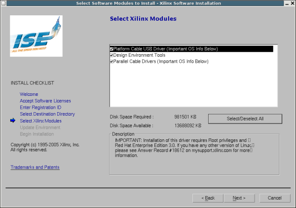 |
Seleccionar las variables de entorno que se quieren instalar. Yo las tengo puestas todas:
|
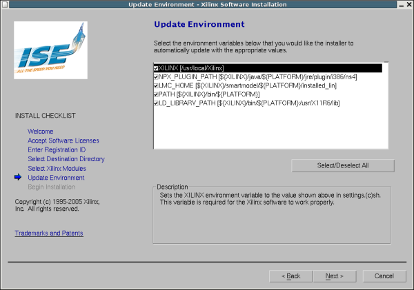 |
Comprobación final. Aparece una ventana con todo lo que hemos seleccionaro. Pulsamos en Install
|
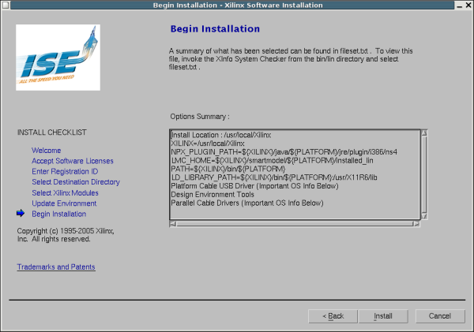 |
Comienza la instalación del CD 1. Se empiezan a instalar todos los ficheros en el disco duro. La duración depende del ordenador. En mi caso ha tardado unos 4 minutos.
|
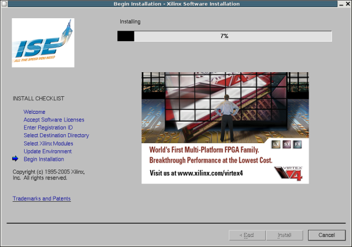 |
Al llegar la barra de progreso al 100% comienza a instalar los drivers de los cables para descargar los diseños en la FPGA. Estos drivers están compilados para la versión del kernel que viene con Red Hat Enterprise por lo que se producen una serie de errores encadenados:
|
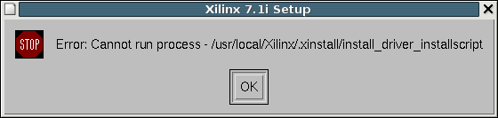 |
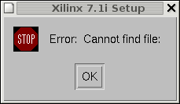 |
|---|---|
|
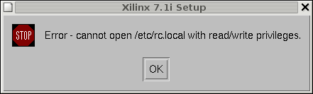 |
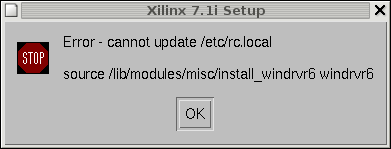 |
|
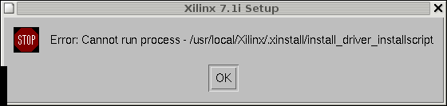 |
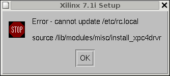 |
Estos drivers están compilados para un kernel 2.4.x... así que no valen para un 2.6.8 que es el que yo tengo... tal vez instalando ISE en una Debian/Sarge con Kernel 2.4 no salgan estos mensajes de error... no lo he probado todavía.
Fin de la instalación del CD 1. Pide si quieremos bajar las actualizaciones disponibles. Yo he puesto que no
|
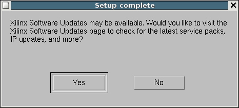 |
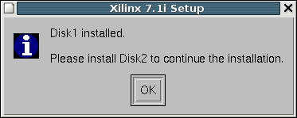 |
Página 1 de 3
|
|